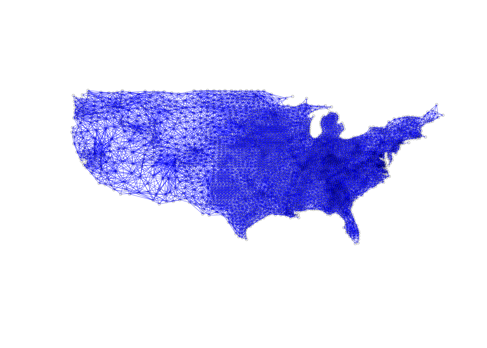
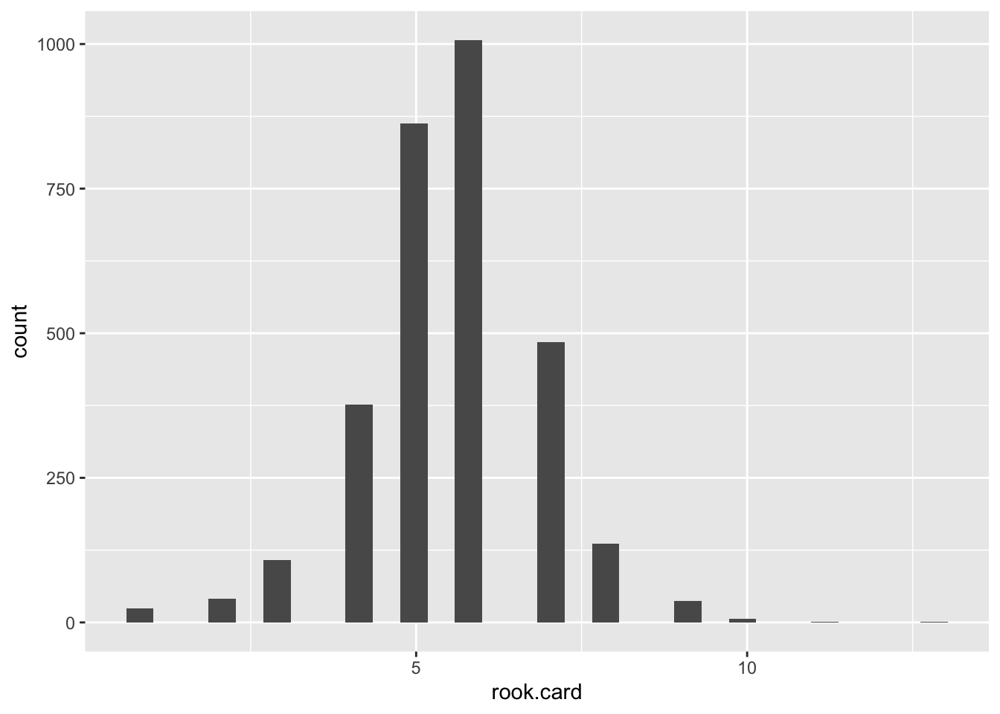

Chapter 6 Contiguity-Based Spatial Weights
Introduction
This notebook covers the functionality of the Contiguity-Based Spatial Weights section of the GeoDa workbook. We refer to that document for details on the methodology, references, etc. The goal of these notes is to approximate as closely as possible the operations carried out using GeoDa by means of a range of R packages.
The notes are written with R beginners in mind, more seasoned R users can probably skip most of the comments on data structures and other R particulars. Also, as always in R, there are typically several ways to achieve a specific objective, so what is shown here is just one way that works, but there often are others (that may even be more elegant, work faster, or scale better).
For this notebook, we use U.S. Homicide data. Our goal in this lab is show how to implement contiguity based spatial weights
Objectives
After completing the notebook, you should know how to carry out the following tasks:
Construct rook and queen contiguity-based spatial weights
Compute higher order contiguity weights
Save weights information
Assess the characteristics of spatial weights
Visualize the graph structure of spatial weights
Identify the neighbors of selected observations
R Packages used
sf: To read in the shapefile, add centroids, and create the neighbors lists
purrr: Used to map a function over each element of a vector
ggplot2: To make a connectivity histogram
spdep: Save weights files and create neighbors lists of higher order
**geodaData: Load the data for the notebook.
R Commands used
Below follows a list of the commands used in this notebook. For further details and a comprehensive list of options, please consult the R documentation.
Base R:
install.packages,library,setwd,class,str,lapply,attributes,summary,head,seqsf:
plot,st_centroid,st_relatepurrr:
map_dblggplot2:
ggplot,geom_histogram,aes,xlabspdep:
write.nb.gal,nblag,nblag_cumul,card
Preliminaries
Before starting, make sure to have the latest version of R and of packages that are compiled for the matching version of R (this document was created using R 3.5.1 of 2018-07-02). Also, optionally, set a working directory, even though we will not actually be saving any files.19
Load packages
First, we load all the required packages using the library command. If you don't have some of these in your system, make sure to install them first as well as their dependencies.20 You will get an error message if something is missing. If needed, just install the missing piece and everything will work after that.
library(sf)
library(spdep)
library(purrr)
library(ggplot2)
library(geodaData)geodaData
All of the data for the R notebooks is available in the geodaData package. We loaded the library earlier, now to access the individual data sets, we use the double colon notation. This works similar to to accessing a variable with $, in that a drop down menu will appear with a list of the datasets included in the package. For this notebook, we use ncovr.
us.bound <- geodaData::ncovrContiguity Weights
Contiguity means that two spatial units share a common border of non-zero length. Operationally, we can further distinguish between a rook and a queen criterion of contiguity, in analogy to the moves allowed for the such-named pieces on a chess board.
The rook criterion defines neighbors by the existence of a common edge between two spatial units. The queen criterion is somewhat more encompassing and defines neighbors as spatial units sharing a common edge or a common vertex.4 Therefore, the number of neighbors according to the queen criterion will always be at least as large as for the rook criterion.
In practice, the construction of the spatial weights from the geometry of the data cannot be done by visual inspection or manual calculation, except in the most trivial of situations. To assess whether two polygons are contiguous requires the use of explicit spatial data structures to deal with the location and arrangement of the polygons. This is implemented through the spatial weights functionality in GeoDa. We will do this with sf and spdep libraries.
We will create our neighbors using sf first, as the spdep library doesn't allow us to create neighbors lists directly as with the older sp library. When we create neighbors in sf we will get a class of sgbp(sparse geometry binary predicate), which is similar to the standard nb class used in spdep, but is not quite compatible. We will have to convert from sgbp to nb, which is not too difficult, as the classes are very similar.
It is important to keep in mind that the spatial weights are critically dependent on the quality of the spatial data source (GIS) from which they are constructed. Problems with the topology in the GIS (e.g., slivers) will result in inaccuracies for the neighbor relations included in the spatial weights. In practice, it is essential to check the characteristics of the weights for any evidence of problems. When problems are detected, the solution is to go back to the GIS and fix or clean the topology of the data set. Editing of spatial layers is not implemented in GeoDa, but this is a routine operation in most GIS software.
Rook Contiguity
We first start with rook contiguity, which are neighbors that are connected by a common side. To create our neighbors list we start by making a function that will do the rook contiguity. To do this we start with the function command and use a, a = b for our inputs. We do this reduce unnecessary typing, as the two parameters are both going to be our sf object. From here we just need st_relate. st_relate computes relationships between pairs of geometries, or matches it to a given pattern. This function also has a parameter for a specified pattern. This pattern will refer to a DE9-IM relationship between x[i] and y[j]. We don't need to go into detail on this to utilize rook contiguity, but you can check out the basics of DE9-IM at DE9-IM. All we need for rook contiguity is the pattern input "F***1****". This gives us the correct DE9-IM relationship for rook contiguity. For more documentation on st_relate check out st_relate documentation
st_rook = function(a, b = a) st_relate(a, b, pattern = "F***1****")
sf.sgbp.rook <- st_rook(us.bound)## although coordinates are longitude/latitude, st_relate_pattern assumes that they are planarWe now check the class of our resulting object from the the st_rook function with the base R function class. It is sgbp, which we will have to convert in order to work with spdep and the plot function later on.
class(sf.sgbp.rook)## [1] "sgbp"Now we will start our conversion from class sgbp to nb. To do this, we need to change the class explicitly, and take the precaution to represent observations with no neighbors with the integer 0. Our data set doesn't have any observations without neighbors, but in ones with these, it will mess everything up, if not dealt with.
We start with the function operator. The input for our function will be an object of class sgbp, denoted by x. We store the attributes in attrs, as we will need to reapply them later. Now we deal we observation with no neighbors. We will use lapply, which applies a function to each element of a list or vector. As for the input function, we make one that checks the length of an element of our list for 0(meaning no neighbors) and returns 0 if the element is empty and the element otherwise. This can be a bit confusing, for more information on lapply, check out lapply documentation
From here we will have dealt with observation with no neighbors, but will need to reapply our attributes to the resulting structure from the lapply function. This is done by calling the attributes function and assigning our stored attributes. The final step is to explicitly change the class to nb by using the class function and assigning "nb". We then return our object x.
as.nb.sgbp <- function(x, ...) {
attrs <- attributes(x)
x <- lapply(x, function(i) { if(length(i) == 0L) 0L else i } )
attributes(x) <- attrs
class(x) <- "nb"
x
}Now we use the function we created to convert our sgbp object to nb.
sf.nb.rook <- as.nb.sgbp(sf.sgbp.rook)Now that we are converted to nb, we can use the summary command to give us more useful information about the neighbors list.
summary(sf.nb.rook)## Neighbour list object:
## Number of regions: 3085
## Number of nonzero links: 17188
## Percentage nonzero weights: 0.1805989
## Average number of links: 5.571475
## Link number distribution:
##
## 1 2 3 4 5 6 7 8 9 10 11 13
## 24 41 108 377 863 1007 484 136 37 6 1 1
## 24 least connected regions:
## 45 49 585 643 837 1197 1377 1402 1442 1464 1470 1523 1531 1532 1543 1596 1605 1653 1737 1767 1775 2892 2893 2919 with 1 link
## 1 most connected region:
## 606 with 13 linksWe use the class command to check and make sure we have nb.
class(sf.nb.rook)## [1] "nb"We check the length to make sure it corresponds with the GeoDa tutorial example.
length(sf.nb.rook)## [1] 3085Queen Contiguity
We proceed in the same fashion to construct queen contiguity weights. The difference between the rook and queen criterion to determine neighbors is that the latter also includes common vertices. This makes the greatest difference for regular grids (square polygons), where the rook criterion will result in four neighbors (except for edge cases) and the queen criterion will yield eight. For irregular polygons (like most areal units encountered in practice), the differences will be slight. In order to deal with potential inaccuracies in the polygon file (such as rounding errors), using the queen criterion is recommended in practice. Hence it is also the default for contiguity weights.
To make our queen contiguity weights, we make a function using st_relate and specifying a DE9-IM pattern. For queen contiguity, our pattern is "F***T****". We we don't really need to go into why the pattern is what it is for our purposes, but DE9-IM and st_relate documentation can help explain this to a degree.
st_queen <- function(a, b = a) st_relate(a, b, pattern = "F***T****")Now we use our st_queen function to get another sgbp neighbor list
sf.sgbp.queen <- st_queen(us.bound)## although coordinates are longitude/latitude, st_relate_pattern assumes that they are planarTo convert to type nb we use as.nb.sgbp, which we created earlier.
sf.nb.queen <- as.nb.sgbp(sf.sgbp.queen)Higher Order Contiguity
Now we move on to higher order contiguity weights. To make these we will need the spdep package. We will use the nblag and nblag_cumul functions to compute the higher order weights.
The nblag function takes a neighbor list of class nb and an order as parameters. It will give us a list of neighbors lists. One for 1st order neighbors and one for second order neighbors. We can select from this data structure by double bracket notation, for instance [[1]] will give the nb object for first order neighbors. Using a 2 instead of a 1 will give us the second order neighbors.
second.order.queen <- nblag(sf.nb.queen, 2)We first take a comprehensive look at second.order.queen to see the resulting data structure from nblag. As said earlier, it is a list of 2 nb objects. One for 1st order neighbors and one for 2nd order. It is important to examine this, so we can make use of specific elements of the data structure in our visualizations of the neighbors.
str(second.order.queen)## List of 2
## $ :List of 3085
## ..$ : int [1:3] 23 31 41
## ..$ : int [1:3] 3 4 70
## ..$ : int [1:4] 2 5 63 70
## ..$ : int [1:7] 2 28 32 43 56 69 70
## ..$ : int [1:4] 3 6 29 63
## ..$ : int [1:3] 5 7 29
## ..$ : int [1:4] 6 8 29 50
## ..$ : int [1:9] 7 9 44 50 60 64 71 87 89
## ..$ : int [1:3] 8 10 44
## ..$ : int [1:3] 9 11 44
## ..$ : int [1:4] 10 12 44 47
## ..$ : int [1:3] 11 24 47
## ..$ : int [1:4] 14 27 33 36
## ..$ : int [1:3] 13 15 33
## ..$ : int [1:5] 14 16 30 33 37
## ..$ : int [1:4] 15 17 30 34
## ..$ : int [1:4] 16 18 34 42
## ..$ : int [1:3] 17 19 42
## ..$ : int [1:5] 18 20 39 42 46
## ..$ : int [1:4] 19 21 39 40
## ..$ : int [1:3] 20 22 40
## ..$ : int [1:4] 21 23 38 40
## ..$ : int [1:4] 1 22 38 41
## ..$ : int [1:4] 12 25 47 79
## ..$ : int [1:5] 24 26 67 79 88
## ..$ : int [1:5] 25 27 36 61 67
## ..$ : int [1:3] 13 26 36
## ..$ : int [1:2] 4 32
## ..$ : int [1:7] 5 6 7 50 62 63 66
## ..$ : int [1:5] 15 16 34 37 76
## ..$ : int [1:4] 1 35 41 73
## ..$ : int [1:4] 4 28 43 48
## ..$ : int [1:7] 13 14 15 36 37 57 59
## ..$ : int [1:6] 16 17 30 42 74 76
## ..$ : int [1:5] 31 51 73 121 134
## ..$ : int [1:7] 13 26 27 33 57 59 61
## ..$ : int [1:6] 15 30 33 57 76 78
## ..$ : int [1:7] 22 23 40 41 53 54 55
## ..$ : int [1:5] 19 20 40 46 52
## ..$ : int [1:7] 20 21 22 38 39 52 53
## ..$ : int [1:9] 1 23 31 38 55 65 73 97 100
## ..$ : int [1:7] 17 18 19 34 46 74 75
## ..$ : int [1:6] 4 32 48 56 81 90
## ..$ : int [1:6] 8 9 10 11 47 60
## ..$ : int 58
## ..$ : int [1:6] 19 39 42 52 75 77
## ..$ : int [1:8] 11 12 24 44 60 79 82 99
## ..$ : int [1:4] 32 43 49 81
## ..$ : int 48
## ..$ : int [1:7] 7 8 29 62 64 87 96
## ..$ : int [1:2] 35 2892
## ..$ : int [1:7] 39 40 46 53 77 83 84
## ..$ : int [1:6] 38 40 52 54 84 85
## ..$ : int [1:8] 38 53 55 65 68 85 94 95
## ..$ : int [1:5] 38 41 54 65 68
## ..$ : int [1:4] 4 43 69 90
## ..$ : int [1:8] 33 36 37 59 78 102 103 104
## ..$ : int [1:3] 45 86 93
## ..$ : int [1:6] 33 36 57 61 80 102
## ..$ : int [1:5] 8 44 47 71 82
## ..$ : int [1:6] 26 36 59 67 80 114
## ..$ : int [1:7] 29 50 66 96 101 118 125
## ..$ : int [1:7] 3 5 29 66 70 101 111
## ..$ : int [1:3] 8 50 87
## ..$ : int [1:6] 41 54 55 95 100 115
## ..$ : int [1:4] 29 62 63 101
## ..$ : int [1:7] 25 26 61 88 114 126 127
## ..$ : int [1:2] 54 55
## ..$ : int [1:8] 4 56 70 90 110 120 139 140
## ..$ : int [1:7] 2 3 4 63 69 110 111
## ..$ : int [1:7] 8 60 82 89 119 133 162
## ..$ : int [1:2] 86 108
## ..$ : int [1:5] 31 35 41 97 121
## ..$ : int [1:6] 34 42 75 76 106 107
## ..$ : int [1:7] 42 46 74 77 91 105 106
## ..$ : int [1:8] 30 34 37 74 78 92 107 109
## ..$ : int [1:5] 46 52 75 83 91
## ..$ : int [1:6] 37 57 76 92 104 122
## ..$ : int [1:8] 24 25 47 88 99 135 137 138
## ..$ : int [1:4] 59 61 102 114
## ..$ : int [1:4] 43 48 90 108
## ..$ : int [1:5] 47 60 71 99 119
## ..$ : int [1:6] 52 77 84 91 105 112
## ..$ : int [1:6] 52 53 83 85 112 113
## ..$ : int [1:5] 53 54 84 94 113
## ..$ : int [1:5] 58 72 93 108 117
## ..$ : int [1:9] 8 50 64 89 96 125 128 145 146
## ..$ : int [1:5] 25 67 79 127 137
## ..$ : int [1:6] 8 71 87 128 162 180
## ..$ : int [1:6] 43 56 69 81 108 120
## ..$ : int [1:4] 75 77 83 105
## ..$ : int [1:5] 76 78 109 122 123
## ..$ : int [1:5] 58 86 117 131 132
## ..$ : int [1:6] 54 85 95 113 115 116
## ..$ : int [1:4] 54 65 94 115
## ..$ : int [1:4] 50 62 87 125
## ..$ : int [1:8] 41 73 100 121 129 130 173 174
## ..$ : int [1:4] 160 161 169 229
## ..$ : int [1:5] 47 79 82 119 138
## .. [list output truncated]
## ..- attr(*, "predicate")= chr "relate_pattern"
## ..- attr(*, "region.id")= chr [1:3085] "1" "2" "3" "4" ...
## ..- attr(*, "ncol")= int 3085
## ..- attr(*, "class")= chr "nb"
## ..- attr(*, "sym")= logi TRUE
## $ :List of 3085
## ..$ : int [1:8] 22 35 38 55 65 73 97 100
## ..$ : int [1:9] 5 28 32 43 56 63 69 110 111
## ..$ : int [1:8] 4 6 29 66 69 101 110 111
## ..$ : int [1:10] 3 48 63 81 90 110 111 120 139 140
## ..$ : int [1:8] 2 7 50 62 66 70 101 111
## ..$ : int [1:6] 3 8 50 62 63 66
## ..$ : int [1:12] 5 9 44 60 62 63 64 66 71 87 ...
## ..$ : int [1:16] 6 10 11 29 47 62 82 96 119 125 ...
## ..$ : int [1:9] 7 11 47 50 60 64 71 87 89
## ..$ : int [1:4] 8 12 47 60
## ..$ : int [1:7] 8 9 24 60 79 82 99
## ..$ : int [1:7] 10 25 44 60 79 82 99
## ..$ : int [1:6] 15 26 37 57 59 61
## ..$ : int [1:7] 16 27 30 36 37 57 59
## ..$ : int [1:8] 13 17 34 36 57 59 76 78
## ..$ : int [1:7] 14 18 33 37 42 74 76
## ..$ : int [1:7] 15 19 30 46 74 75 76
## ..$ : int [1:7] 16 20 34 39 46 74 75
## ..$ : int [1:8] 17 21 34 40 52 74 75 77
## ..$ : int [1:7] 18 22 38 42 46 52 53
## ..$ : int [1:6] 19 23 38 39 52 53
## ..$ : int [1:8] 1 20 39 41 52 53 54 55
## ..$ : int [1:10] 21 31 40 53 54 55 65 73 97 100
## ..$ : int [1:11] 11 26 44 60 67 82 88 99 135 137 ...
## ..$ : int [1:12] 12 27 36 47 61 99 114 126 127 135 ...
## ..$ : int [1:11] 13 24 33 57 59 79 80 88 114 126 ...
## ..$ : int [1:7] 14 25 33 57 59 61 67
## ..$ : int [1:6] 2 43 48 56 69 70
## ..$ : int [1:10] 3 8 64 70 87 96 101 111 118 125
## ..$ : int [1:10] 14 17 33 42 57 74 78 92 107 109
## ..$ : int [1:9] 23 38 51 55 65 97 100 121 134
## ..$ : int [1:7] 2 49 56 69 70 81 90
## ..$ : int [1:11] 16 26 27 30 61 76 78 80 102 103 ...
## ..$ : int [1:11] 15 18 19 37 46 75 78 92 106 107 ...
## ..$ : int [1:9] 1 41 97 130 136 168 181 189 2892
## ..$ : int [1:11] 14 15 25 37 67 78 80 102 103 104 ...
## ..$ : int [1:14] 13 14 16 34 36 59 74 92 102 103 ...
## ..$ : int [1:15] 1 20 21 31 39 52 65 68 73 84 ...
## ..$ : int [1:10] 18 21 22 38 42 53 75 77 83 84
## ..$ : int [1:10] 19 23 41 46 54 55 77 83 84 85
## ..$ : int [1:13] 22 35 40 53 54 68 95 115 121 129 ...
## ..$ : int [1:11] 16 20 30 39 52 76 77 91 105 106 ...
## ..$ : int [1:7] 2 28 49 69 70 108 120
## ..$ : int [1:11] 7 12 24 50 64 71 79 82 87 89 ...
## ..$ : int [1:2] 86 93
## ..$ : int [1:12] 17 18 20 34 40 53 74 83 84 91 ...
## ..$ : int [1:10] 8 9 10 25 71 88 119 135 137 138
## ..$ : int [1:5] 4 28 56 90 108
## ..$ : int [1:3] 32 43 81
## ..$ : int [1:15] 5 6 9 44 60 63 66 71 89 101 ...
## ..$ : int [1:4] 31 73 121 134
## ..$ : int [1:13] 19 20 21 22 38 42 54 75 85 91 ...
## ..$ : int [1:16] 20 21 22 23 39 41 46 55 65 68 ...
## ..$ : int [1:10] 22 23 40 41 52 84 100 113 115 116
## ..$ : int [1:13] 1 22 23 31 40 53 73 85 94 95 ...
## ..$ : int [1:11] 2 28 32 48 70 81 108 110 120 139 ...
## ..$ : int [1:14] 13 14 15 26 27 30 61 76 80 92 ...
## ..$ : int [1:5] 72 108 117 131 132
## ..$ : int [1:12] 13 14 15 26 27 37 67 78 103 104 ...
## ..$ : int [1:15] 7 9 10 11 12 24 50 64 79 87 ...
## ..$ : int [1:10] 13 25 27 33 57 88 102 126 127 144
## ..$ : int [1:11] 5 6 7 8 63 64 87 111 145 156 ...
## ..$ : int [1:14] 2 4 6 7 50 62 69 110 118 139 ...
## ..$ : int [1:13] 7 9 29 44 60 62 71 89 96 125 ...
## ..$ : int [1:13] 1 23 31 38 53 68 73 85 94 97 ...
## ..$ : int [1:10] 3 5 6 7 50 70 96 111 118 125
## ..$ : int [1:14] 24 27 36 59 79 80 102 137 144 163 ...
## ..$ : int [1:7] 38 41 53 65 85 94 95
## ..$ : int [1:16] 2 3 28 32 43 63 81 108 111 132 ...
## ..$ : int [1:17] 5 28 29 32 43 56 66 90 101 118 ...
## ..$ : int [1:15] 7 9 44 47 50 64 87 99 128 138 ...
## ..$ : int [1:7] 58 81 90 93 117 120 132
## ..$ : int [1:15] 1 23 38 51 55 65 100 129 130 134 ...
## ..$ : int [1:16] 16 17 18 19 30 37 46 77 78 91 ...
## ..$ : int [1:13] 17 18 19 34 39 52 76 83 107 112 ...
## ..$ : int [1:12] 15 16 17 33 42 57 75 104 106 122 ...
## ..$ : int [1:10] 19 39 40 42 53 74 84 105 106 112
## ..$ : int [1:15] 15 30 33 34 36 59 74 102 103 107 ...
## ..$ : int [1:12] 11 12 26 44 60 67 82 119 127 163 ...
## ..$ : int [1:8] 26 33 36 57 67 103 126 144
## ..$ : int [1:10] 4 32 49 56 69 72 86 117 120 132
## ..$ : int [1:12] 8 11 12 24 44 79 89 133 138 162 ...
## ..$ : int [1:11] 39 40 46 53 75 85 106 113 148 150 ...
## ..$ : int [1:13] 38 39 40 46 54 77 91 94 105 116 ...
## ..$ : int [1:13] 38 40 52 55 65 68 83 95 112 115 ...
## ..$ : int [1:6] 45 81 90 120 131 132
## ..$ : int [1:17] 7 9 29 44 60 62 71 118 156 162 ...
## ..$ : int [1:13] 24 26 47 61 99 114 126 135 138 163 ...
## ..$ : int [1:17] 7 9 44 50 60 64 82 96 119 125 ...
## ..$ : int [1:13] 4 32 48 70 72 86 110 117 132 139 ...
## ..$ : int [1:9] 42 46 52 74 84 106 112 148 150
## ..$ : int [1:12] 30 34 37 57 74 104 107 141 149 151 ...
## ..$ : int [1:7] 45 72 108 120 170 171 172
## ..$ : int [1:13] 38 53 55 65 68 84 100 112 129 142 ...
## ..$ : int [1:11] 38 41 53 55 68 85 100 113 116 129 ...
## ..$ : int [1:13] 7 8 29 64 66 89 101 118 128 145 ...
## ..$ : int [1:16] 1 23 31 35 38 55 65 115 134 142 ...
## ..$ : int [1:4] 230 307 312 343
## ..$ : int [1:13] 11 12 24 25 44 60 71 88 133 135 ...
## .. [list output truncated]
## ..- attr(*, "class")= chr "nb"
## ..- attr(*, "region.id")= chr [1:3085] "1" "2" "3" "4" ...
## ..- attr(*, "sym")= logi TRUE
## - attr(*, "call")= language nblag(neighbours = sf.nb.queen, maxlag = 2)Now we can look at, specifically, the 2nd order neighbors by using the double bracket selection.
str(second.order.queen[[2]])## List of 3085
## $ : int [1:8] 22 35 38 55 65 73 97 100
## $ : int [1:9] 5 28 32 43 56 63 69 110 111
## $ : int [1:8] 4 6 29 66 69 101 110 111
## $ : int [1:10] 3 48 63 81 90 110 111 120 139 140
## $ : int [1:8] 2 7 50 62 66 70 101 111
## $ : int [1:6] 3 8 50 62 63 66
## $ : int [1:12] 5 9 44 60 62 63 64 66 71 87 ...
## $ : int [1:16] 6 10 11 29 47 62 82 96 119 125 ...
## $ : int [1:9] 7 11 47 50 60 64 71 87 89
## $ : int [1:4] 8 12 47 60
## $ : int [1:7] 8 9 24 60 79 82 99
## $ : int [1:7] 10 25 44 60 79 82 99
## $ : int [1:6] 15 26 37 57 59 61
## $ : int [1:7] 16 27 30 36 37 57 59
## $ : int [1:8] 13 17 34 36 57 59 76 78
## $ : int [1:7] 14 18 33 37 42 74 76
## $ : int [1:7] 15 19 30 46 74 75 76
## $ : int [1:7] 16 20 34 39 46 74 75
## $ : int [1:8] 17 21 34 40 52 74 75 77
## $ : int [1:7] 18 22 38 42 46 52 53
## $ : int [1:6] 19 23 38 39 52 53
## $ : int [1:8] 1 20 39 41 52 53 54 55
## $ : int [1:10] 21 31 40 53 54 55 65 73 97 100
## $ : int [1:11] 11 26 44 60 67 82 88 99 135 137 ...
## $ : int [1:12] 12 27 36 47 61 99 114 126 127 135 ...
## $ : int [1:11] 13 24 33 57 59 79 80 88 114 126 ...
## $ : int [1:7] 14 25 33 57 59 61 67
## $ : int [1:6] 2 43 48 56 69 70
## $ : int [1:10] 3 8 64 70 87 96 101 111 118 125
## $ : int [1:10] 14 17 33 42 57 74 78 92 107 109
## $ : int [1:9] 23 38 51 55 65 97 100 121 134
## $ : int [1:7] 2 49 56 69 70 81 90
## $ : int [1:11] 16 26 27 30 61 76 78 80 102 103 ...
## $ : int [1:11] 15 18 19 37 46 75 78 92 106 107 ...
## $ : int [1:9] 1 41 97 130 136 168 181 189 2892
## $ : int [1:11] 14 15 25 37 67 78 80 102 103 104 ...
## $ : int [1:14] 13 14 16 34 36 59 74 92 102 103 ...
## $ : int [1:15] 1 20 21 31 39 52 65 68 73 84 ...
## $ : int [1:10] 18 21 22 38 42 53 75 77 83 84
## $ : int [1:10] 19 23 41 46 54 55 77 83 84 85
## $ : int [1:13] 22 35 40 53 54 68 95 115 121 129 ...
## $ : int [1:11] 16 20 30 39 52 76 77 91 105 106 ...
## $ : int [1:7] 2 28 49 69 70 108 120
## $ : int [1:11] 7 12 24 50 64 71 79 82 87 89 ...
## $ : int [1:2] 86 93
## $ : int [1:12] 17 18 20 34 40 53 74 83 84 91 ...
## $ : int [1:10] 8 9 10 25 71 88 119 135 137 138
## $ : int [1:5] 4 28 56 90 108
## $ : int [1:3] 32 43 81
## $ : int [1:15] 5 6 9 44 60 63 66 71 89 101 ...
## $ : int [1:4] 31 73 121 134
## $ : int [1:13] 19 20 21 22 38 42 54 75 85 91 ...
## $ : int [1:16] 20 21 22 23 39 41 46 55 65 68 ...
## $ : int [1:10] 22 23 40 41 52 84 100 113 115 116
## $ : int [1:13] 1 22 23 31 40 53 73 85 94 95 ...
## $ : int [1:11] 2 28 32 48 70 81 108 110 120 139 ...
## $ : int [1:14] 13 14 15 26 27 30 61 76 80 92 ...
## $ : int [1:5] 72 108 117 131 132
## $ : int [1:12] 13 14 15 26 27 37 67 78 103 104 ...
## $ : int [1:15] 7 9 10 11 12 24 50 64 79 87 ...
## $ : int [1:10] 13 25 27 33 57 88 102 126 127 144
## $ : int [1:11] 5 6 7 8 63 64 87 111 145 156 ...
## $ : int [1:14] 2 4 6 7 50 62 69 110 118 139 ...
## $ : int [1:13] 7 9 29 44 60 62 71 89 96 125 ...
## $ : int [1:13] 1 23 31 38 53 68 73 85 94 97 ...
## $ : int [1:10] 3 5 6 7 50 70 96 111 118 125
## $ : int [1:14] 24 27 36 59 79 80 102 137 144 163 ...
## $ : int [1:7] 38 41 53 65 85 94 95
## $ : int [1:16] 2 3 28 32 43 63 81 108 111 132 ...
## $ : int [1:17] 5 28 29 32 43 56 66 90 101 118 ...
## $ : int [1:15] 7 9 44 47 50 64 87 99 128 138 ...
## $ : int [1:7] 58 81 90 93 117 120 132
## $ : int [1:15] 1 23 38 51 55 65 100 129 130 134 ...
## $ : int [1:16] 16 17 18 19 30 37 46 77 78 91 ...
## $ : int [1:13] 17 18 19 34 39 52 76 83 107 112 ...
## $ : int [1:12] 15 16 17 33 42 57 75 104 106 122 ...
## $ : int [1:10] 19 39 40 42 53 74 84 105 106 112
## $ : int [1:15] 15 30 33 34 36 59 74 102 103 107 ...
## $ : int [1:12] 11 12 26 44 60 67 82 119 127 163 ...
## $ : int [1:8] 26 33 36 57 67 103 126 144
## $ : int [1:10] 4 32 49 56 69 72 86 117 120 132
## $ : int [1:12] 8 11 12 24 44 79 89 133 138 162 ...
## $ : int [1:11] 39 40 46 53 75 85 106 113 148 150 ...
## $ : int [1:13] 38 39 40 46 54 77 91 94 105 116 ...
## $ : int [1:13] 38 40 52 55 65 68 83 95 112 115 ...
## $ : int [1:6] 45 81 90 120 131 132
## $ : int [1:17] 7 9 29 44 60 62 71 118 156 162 ...
## $ : int [1:13] 24 26 47 61 99 114 126 135 138 163 ...
## $ : int [1:17] 7 9 44 50 60 64 82 96 119 125 ...
## $ : int [1:13] 4 32 48 70 72 86 110 117 132 139 ...
## $ : int [1:9] 42 46 52 74 84 106 112 148 150
## $ : int [1:12] 30 34 37 57 74 104 107 141 149 151 ...
## $ : int [1:7] 45 72 108 120 170 171 172
## $ : int [1:13] 38 53 55 65 68 84 100 112 129 142 ...
## $ : int [1:11] 38 41 53 55 68 85 100 113 116 129 ...
## $ : int [1:13] 7 8 29 64 66 89 101 118 128 145 ...
## $ : int [1:16] 1 23 31 35 38 55 65 115 134 142 ...
## $ : int [1:4] 230 307 312 343
## $ : int [1:13] 11 12 24 25 44 60 71 88 133 135 ...
## [list output truncated]
## - attr(*, "class")= chr "nb"
## - attr(*, "region.id")= chr [1:3085] "1" "2" "3" "4" ...
## - attr(*, "sym")= logi TRUEWe store the second order neighbors in sf.nb.queen2 to make things simpler for our visuals.
sf.nb.queen2 <- second.order.queen[[2]]Now if we want to include both 1st and 2nd order neighbors in our visualizations, we need the nblag_cumul function. This will give us an nb object with both 1st and 2nd order neighbors, instead of separating them as in the result of nblag. To use this function, we need the resulting object from the nblag function. nblag_cumul combines the two separate nb objects from the nblag function into one.
second.order.queen.cumul <- nblag_cumul(second.order.queen)Here we take another in depth look at result. We can see that, we now have one nb object with both 1st and 2nd order neighbors.
str(second.order.queen.cumul)## List of 3085
## $ : int [1:11] 22 23 31 35 38 41 55 65 73 97 ...
## $ : int [1:12] 3 4 5 28 32 43 56 63 69 70 ...
## $ : int [1:12] 2 4 5 6 29 63 66 69 70 101 ...
## $ : int [1:17] 2 3 28 32 43 48 56 63 69 70 ...
## $ : int [1:12] 2 3 6 7 29 50 62 63 66 70 ...
## $ : int [1:9] 3 5 7 8 29 50 62 63 66
## $ : int [1:16] 5 6 8 9 29 44 50 60 62 63 ...
## $ : int [1:25] 6 7 9 10 11 29 44 47 50 60 ...
## $ : int [1:12] 7 8 10 11 44 47 50 60 64 71 ...
## $ : int [1:7] 8 9 11 12 44 47 60
## $ : int [1:11] 8 9 10 12 24 44 47 60 79 82 ...
## $ : int [1:10] 10 11 24 25 44 47 60 79 82 99
## $ : int [1:10] 14 15 26 27 33 36 37 57 59 61
## $ : int [1:10] 13 15 16 27 30 33 36 37 57 59
## $ : int [1:13] 13 14 16 17 30 33 34 36 37 57 ...
## $ : int [1:11] 14 15 17 18 30 33 34 37 42 74 ...
## $ : int [1:11] 15 16 18 19 30 34 42 46 74 75 ...
## $ : int [1:10] 16 17 19 20 34 39 42 46 74 75
## $ : int [1:13] 17 18 20 21 34 39 40 42 46 52 ...
## $ : int [1:11] 18 19 21 22 38 39 40 42 46 52 ...
## $ : int [1:9] 19 20 22 23 38 39 40 52 53
## $ : int [1:12] 1 20 21 23 38 39 40 41 52 53 ...
## $ : int [1:14] 1 21 22 31 38 40 41 53 54 55 ...
## $ : int [1:15] 11 12 25 26 44 47 60 67 79 82 ...
## $ : int [1:17] 12 24 26 27 36 47 61 67 79 88 ...
## $ : int [1:16] 13 24 25 27 33 36 57 59 61 67 ...
## $ : int [1:10] 13 14 25 26 33 36 57 59 61 67
## $ : int [1:8] 2 4 32 43 48 56 69 70
## $ : int [1:17] 3 5 6 7 8 50 62 63 64 66 ...
## $ : int [1:15] 14 15 16 17 33 34 37 42 57 74 ...
## $ : int [1:13] 1 23 35 38 41 51 55 65 73 97 ...
## $ : int [1:11] 2 4 28 43 48 49 56 69 70 81 ...
## $ : int [1:18] 13 14 15 16 26 27 30 36 37 57 ...
## $ : int [1:17] 15 16 17 18 19 30 37 42 46 74 ...
## $ : int [1:14] 1 31 41 51 73 97 121 130 134 136 ...
## $ : int [1:18] 13 14 15 25 26 27 33 37 57 59 ...
## $ : int [1:20] 13 14 15 16 30 33 34 36 57 59 ...
## $ : int [1:22] 1 20 21 22 23 31 39 40 41 52 ...
## $ : int [1:15] 18 19 20 21 22 38 40 42 46 52 ...
## $ : int [1:17] 19 20 21 22 23 38 39 41 46 52 ...
## $ : int [1:22] 1 22 23 31 35 38 40 53 54 55 ...
## $ : int [1:18] 16 17 18 19 20 30 34 39 46 52 ...
## $ : int [1:13] 2 4 28 32 48 49 56 69 70 81 ...
## $ : int [1:17] 7 8 9 10 11 12 24 47 50 60 ...
## $ : int [1:3] 58 86 93
## $ : int [1:18] 17 18 19 20 34 39 40 42 52 53 ...
## $ : int [1:18] 8 9 10 11 12 24 25 44 60 71 ...
## $ : int [1:9] 4 28 32 43 49 56 81 90 108
## $ : int [1:4] 32 43 48 81
## $ : int [1:22] 5 6 7 8 9 29 44 60 62 63 ...
## $ : int [1:6] 31 35 73 121 134 2892
## $ : int [1:20] 19 20 21 22 38 39 40 42 46 53 ...
## $ : int [1:22] 20 21 22 23 38 39 40 41 46 52 ...
## $ : int [1:18] 22 23 38 40 41 52 53 55 65 68 ...
## $ : int [1:18] 1 22 23 31 38 40 41 53 54 65 ...
## $ : int [1:15] 2 4 28 32 43 48 69 70 81 90 ...
## $ : int [1:22] 13 14 15 26 27 30 33 36 37 59 ...
## $ : int [1:8] 45 72 86 93 108 117 131 132
## $ : int [1:18] 13 14 15 26 27 33 36 37 57 61 ...
## $ : int [1:20] 7 8 9 10 11 12 24 44 47 50 ...
## $ : int [1:16] 13 25 26 27 33 36 57 59 67 80 ...
## $ : int [1:18] 5 6 7 8 29 50 63 64 66 87 ...
## $ : int [1:21] 2 3 4 5 6 7 29 50 62 66 ...
## $ : int [1:16] 7 8 9 29 44 50 60 62 71 87 ...
## $ : int [1:19] 1 23 31 38 41 53 54 55 68 73 ...
## $ : int [1:14] 3 5 6 7 29 50 62 63 70 96 ...
## $ : int [1:21] 24 25 26 27 36 59 61 79 80 88 ...
## $ : int [1:9] 38 41 53 54 55 65 85 94 95
## $ : int [1:24] 2 3 4 28 32 43 56 63 70 81 ...
## $ : int [1:24] 2 3 4 5 28 29 32 43 56 63 ...
## $ : int [1:22] 7 8 9 44 47 50 60 64 82 87 ...
## $ : int [1:9] 58 81 86 90 93 108 117 120 132
## $ : int [1:20] 1 23 31 35 38 41 51 55 65 97 ...
## $ : int [1:22] 16 17 18 19 30 34 37 42 46 75 ...
## $ : int [1:20] 17 18 19 34 39 42 46 52 74 76 ...
## $ : int [1:20] 15 16 17 30 33 34 37 42 57 74 ...
## $ : int [1:15] 19 39 40 42 46 52 53 74 75 83 ...
## $ : int [1:21] 15 30 33 34 36 37 57 59 74 76 ...
## $ : int [1:20] 11 12 24 25 26 44 47 60 67 82 ...
## $ : int [1:12] 26 33 36 57 59 61 67 102 103 114 ...
## $ : int [1:14] 4 32 43 48 49 56 69 72 86 90 ...
## $ : int [1:17] 8 11 12 24 44 47 60 71 79 89 ...
## $ : int [1:17] 39 40 46 52 53 75 77 84 85 91 ...
## $ : int [1:19] 38 39 40 46 52 53 54 77 83 85 ...
## $ : int [1:18] 38 40 52 53 54 55 65 68 83 84 ...
## $ : int [1:11] 45 58 72 81 90 93 108 117 120 131 ...
## $ : int [1:26] 7 8 9 29 44 50 60 62 64 71 ...
## $ : int [1:18] 24 25 26 47 61 67 79 99 114 126 ...
## $ : int [1:23] 7 8 9 44 50 60 64 71 82 87 ...
## $ : int [1:19] 4 32 43 48 56 69 70 72 81 86 ...
## $ : int [1:13] 42 46 52 74 75 77 83 84 105 106 ...
## $ : int [1:17] 30 34 37 57 74 76 78 104 107 109 ...
## $ : int [1:12] 45 58 72 86 108 117 120 131 132 170 ...
## $ : int [1:19] 38 53 54 55 65 68 84 85 95 100 ...
## $ : int [1:15] 38 41 53 54 55 65 68 85 94 100 ...
## $ : int [1:17] 7 8 29 50 62 64 66 87 89 101 ...
## $ : int [1:24] 1 23 31 35 38 41 55 65 73 100 ...
## $ : int [1:8] 160 161 169 229 230 307 312 343
## $ : int [1:18] 11 12 24 25 44 47 60 71 79 82 ...
## [list output truncated]
## - attr(*, "region.id")= chr [1:3085] "1" "2" "3" "4" ...
## - attr(*, "call")= language nblag_cumul(nblags = second.order.queen)
## - attr(*, "class")= chr "nb"Visualizing Contiguity Neighbors
Connectivity Graph
A connectivity graph takes a point and displays a line to each neighboring point. We are working with polygons at the moment, so we will need to get points in order to make our connectivity graphs. The most typically method for this will be polygon centroids. We will calculate these in the sf package before moving onto the graphs.
Getting Latitude and Longitude of Polygon Centroids
We will need points to associate with each polygon before we can make our connectivity graph. It will be a little more complicated than just running st_centroid on the sf object: us.bound. We need the coordinates in a separate data frame for this to work. To do this we will use a mapping function. The mapping function applies a given function to each element of a vector and returns a vector of the same length. Our input vector will be the geometry column of us.bound. Our function will be st_centroid. We will be using map_dbl variation of map from the purrr package. For more documentation, check out map documentation
To get our longitude values we map the st_centroid function over the geometry column of us.bound and access the longitude value through double bracket notation [[]] and 1. This allows us to get only the longitude, which is the first value in each centroid.
longitude <- map_dbl(us.bound$geometry, ~st_centroid(.x)[[1]])We do the same for latitude with one key difference. We access the second value per each centroid with [[2]].
latitude <- map_dbl(us.bound$geometry, ~st_centroid(.x)[[2]])Now that we have latitude and longitude, we use cbind to put longitude and latitude into the same object.
coords <- cbind(longitude, latitude)We check the first few observations to see if things are formatted correctly.
head(coords)## longitude latitude
## [1,] -94.90337 48.77173
## [2,] -118.51718 48.46959
## [3,] -117.85532 48.39591
## [4,] -119.73944 48.54843
## [5,] -117.27400 48.53280
## [6,] -116.47029 48.76502Rook Connectivity Graphs
Now that we have coordinates for each of our observations, we can plot the neighbors through a connectivity graph. We just need the basic plot function and to enter our neighbor list as the first parameter, then our coordinates as the second. We add extra customizations, so we can actually see what is going on in the graph. We use lwd = .2 to make the line length less thick, we set the col ="blue", and finally cex = .5 to make the point symbols smaller. The default options make the graph near indecipherable, so it is important to add these extra parameters.
plot(sf.nb.rook, coords, lwd=.2, col="blue", cex = .5)
Queen Connectivity Graphs
Now we will do the same for queen contiguity. The queen variation will have more lines, as there are more neighbors due to shared vertices counting in the neighbors relationship. It is hard to spot the differences between the two plots, as they are both visually busy
First Order
The same form is followed for queen contiguity as we are working with the same class: a nb object and a corresponding list of coordinates.
plot(sf.nb.queen, coords, lwd=.2, col="blue", cex = .5)
Second Order
Here we take a look at a connectivity graph for second order neighbors. All we need is the second order nb object that we created earlier and our coordinates. This graph will look significantly different from the ones we've made so far, as second order tends to have more neighbors than first order.
plot(sf.nb.queen2, coords, lwd=.2, col="blue", cex = .5)
Cumulative
We will take a look a plot with both second and first order neighbors here. It will be a very busy graph.
plot(second.order.queen.cumul, coords, lwd=.2, col="blue", cex = .5)
Connectivity Histogram
A connectivity histogram shows the number of observations for each cardinality of neighbors(how many observations have the same number of neighbors). We first have to get the cardinality before we can make the histograms. We can do this by using the card function from the spdep package. This will give us a vector of 3085 observations with each one containing the corresponding number of neighbors from the input neighbors list.
rook.card <- card(sf.nb.rook)We take a look at the first few observation with the head function and as we can see, it is a vector with number of neighbors for each observation of the nb object.
head(rook.card)## [1] 3 3 4 7 4 3Now we check the length and it is what we expected.
length(rook.card)## [1] 3085We can visualize the cardinality through a ggplot2 histogram. For this we just need to call the ggplot function and add geom_histogram as a layer. We specify the aes() in geom_histogram to be our rook cardinality. This will give us a basic plot, which we will customize further a little later.
ggplot() +
geom_histogram(aes(x=rook.card))## `stat_bin()` using `bins = 30`. Pick better value with `binwidth`.
Here we will add a few customizations to make the plot nicer. The most important is with the breaks = parameter, as the bars are spaced out kind of weirdly in our opening plot. We can avoid manually typing in the breaks by using the seq function, which will give us a list of numbers 0 to 13, incrementing by 1 each time. We specify the range in the first two arguments and then use by = to pick the number to increment by. In our case, 1 makes the most sense as you cannot have half of a neighbor.
ggplot() +
geom_histogram(aes(x=rook.card), breaks = seq(0,13, by = 1)) +
xlab("number of neighbors")
With the summary command we can get a look at the summary statistics for the cardinality of the neighbors list.
summary(rook.card)## Min. 1st Qu. Median Mean 3rd Qu. Max.
## 1.000 5.000 6.000 5.571 6.000 13.000Saving Neighbors
To save our neighbors list, we use the write.nb.gal function from the spdep package. The file format is a GAL Lattice file. We input our neighbors list, and the the filename second. We have two options from this point. We can save the file with the old style or the new GeoDa header style.
Oldstyle
The oldstyle just saves the neighbor list with then number of observations at the top of the file. We can save in this format by setting oldstyle = to TRUE.
write.nb.gal(sf.nb.rook, "rook_contiguity_old.gal", oldstyle = TRUE)GeoDA Header Format
The new GeoDA header style, also takes the shapefile name taken from GAL file for the dataset and the region id indicator variable name. It puts this information in a header for the file. All we have to do is set oldstyle = to FALSE and enter names for shpfile and ind parameters.
write.nb.gal(sf.nb.rook, "rook_contiguity_new.gal", oldstyle = FALSE, shpfile ="NAT.shp", ind ="region id")